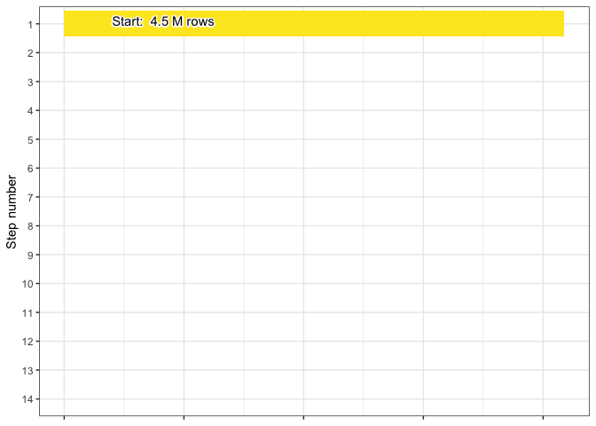
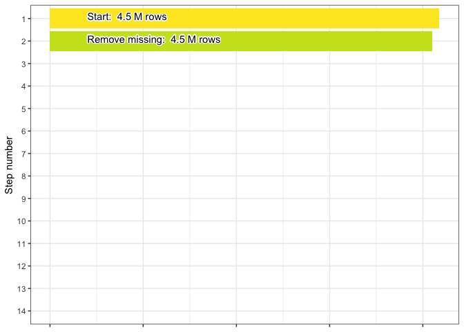
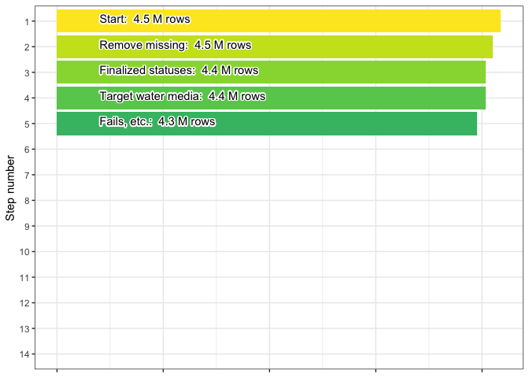
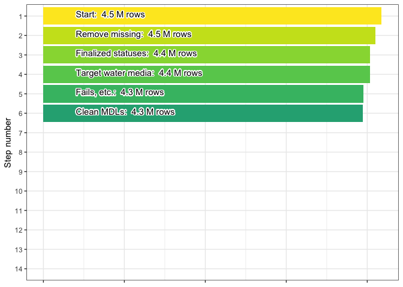
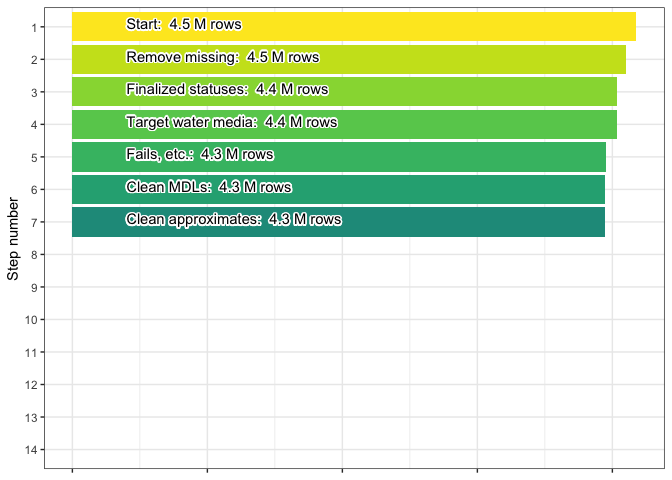
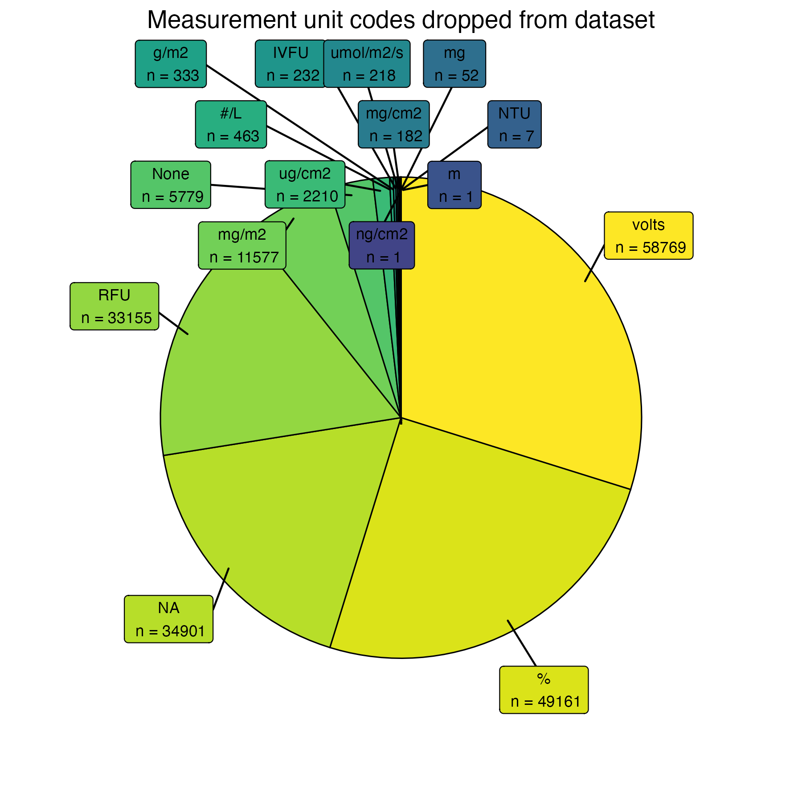
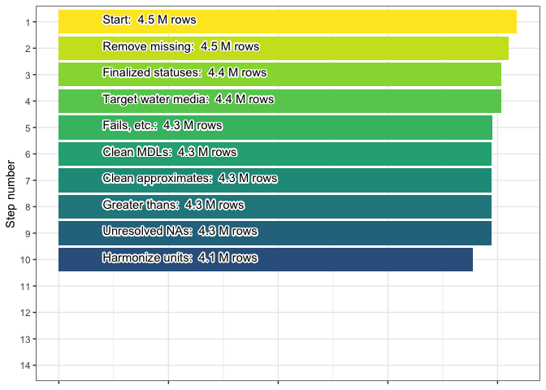

4 Chlorophyll a (chla) harmonization process
4.0.1 Initial dataset
After the pre-harmonization process the chlorophyll a-only WQP dataset
contains 4.35 million rows. This dataset contains the following
user-defined characteristicNames: Chlorophyll a, Chlorophyll a (probe
relative fluorescence), Chlorophyll a, corrected for pheophytin,
Chlorophyll a (probe), Chlorophyll a, free of pheophytin, Chlorophyll a,
uncorrected for pheophytin, Chlorophyll a - Phytoplankton (suspended).
These names are chosen in order to select for only those measurements that pertain to chlorophyll a.

4.0.2 Filter for water media
The first step in chla harmonization is to ensure that the media type
for the data is "water" or "Water". This should just be a
precautionary step: 0 rows are removed. The final row count after this
is 4.35 million.

4.0.3 Document and remove fails
In this step we filter out records based on indications that they have failed data quality assurance or quality control for some reason given by the data provider (these instances are referred to here as “failures”).
After reviewing the contents of the ActivityCommentText,
ResultLaboratoryCommentText, ResultCommentText, and
ResultMeasureValue_original columns, we developed a list of terms that
captured the majority of instances where records had failures or
unacceptable measurements. We found the phrasing to be consistent across
columns and so we searched for the same (case agnostic) terms in all
four locations. The terms are: “beyond accept”, “cancelled”,
“contaminat”, “error”, “fail”, “improper”, “instrument down”,
“interference”, “invalid”, “no result”, “no test”, “not accept”,
“outside of accept”, “problem”, “QC EXCEEDED”, “questionable”,
“suspect”, “unable”, “violation”, “reject”, “no data”.
Below are pie charts that break down the number of failure detections by column. Note that the plotting below is automated so if one or more of the columns listed above are not plotted, this indicates that the column(s) did not return any matches for the failure phrases. Also note that a single record can contain multiple failure phrases; therefore, failure phrases are not mutually exclusive.

4.0.4 Clean MDLs
In this step method detection limits (MDLs) are used to clean up the
reported values. When a numeric value is missing for the data record
(i.e., NA or text that became NA during an as.numeric call) we
check for non-detect language in the ResultLaboratoryCommentText,
ResultCommentText, ResultDetectionConditionText, and
ResultMeasureValue columns. This language can be "non-detect",
"not detect", "non detect", "undetect", or "below".
If non-detect language exists then we use the
DetectionQuantitationLimitMeasure.MeasureValue column for the MDL,
otherwise if there is a < and a number in the ResultMeasureValue
column we use that number instead.
We then use a random number between 0 and 0.5 * MDL as the record’s
value moving forward. Once the process is complete we filter out any
negative values in the dataset.
We produce a new column, mdl_flag, from the MDL cleaning process.
Records where no MDL-based adjustment was made and which are at or above
the MDL are assigned a 0. Records with corrected values based on the MDL
method are assigned a 1. Finally, records where no MDL-based adjustment
was made and which contain a numeric value below the provided MDL are
assigned a 2.
This step should not result in a change in rows but we still check: 7486 rows are removed. The final row count after this is 4.26 million.

4.0.5 Clean approximate values
Cleaning approximate values involves a similar process as for MDL
cleaning. We flag “approximated” values in the dataset. The
ResultMeasureValue column gets checked for all three of the
following conditions:
- Numeric-only version of the column is still
NAafter MDL cleaning - The original column text contained a number
- Any of
ResultLaboratoryCommentText,ResultCommentText, orResultDetectionConditionTextmatch this regular expression, ignoring case:"result approx|RESULT IS APPROX|value approx"
We then use the approximate value as the record’s value moving forward.
Records with corrected values based on the above method are noted with a
1 in the approx_flag column.
This should not result in a change in rows but we still check: 0 rows are removed. The final row count after this is 4.26 million.

4.0.6 Clean values with “greater than” data
The next step is similar to the MDL and approximate value cleaning
processes, and follows the approximate cleaning process most closely.
The goal is to clean up values that were entered as “greater than” some
value. The ResultMeasureValue column gets checked for all three of
the following conditions:
- Numeric-only version of the column is still
NAafter MDL & approximate cleaning - The original column text contained a number
- The original column text contained a
>
We then use the “greater than” value (without >) as the record’s value
moving forward.
Records with corrected values based on the above method are noted with a
1 in the greater_flag column.
This should not result in a change in rows but we still check: 0 rows are removed. The final row count after this is 4.26 million.

4.0.7 Drop unresolved NA measurements
The goal of the preceding three steps was to prevent records with
seemingly missing measurement data from being dropped if there was still
a chance of recovering a usable value. At this point we’ve finished with
that process and we proceed to drop the remaining records with NA
values in their harmonized_value column.
0 rows are removed. The final row count after this is 4.26 million.

4.0.8 Harmonize record units
The next step in chla harmonization is converting the units of WQP records. We create the following conversion table, which is used to translate units provided in WQP into micrograms per liter (ug/L):
| ResultMeasure.MeasureUnitCode | conversion |
|---|---|
| mg/l | 1e+03 |
| mg/L | 1e+03 |
| ppm | 1e+03 |
| ug/l | 1e+00 |
| ug/L | 1e+00 |
| mg/m3 | 1e+00 |
| ppb | 1e+00 |
| mg/cm3 | 1e+06 |
| ug/ml | 1e+03 |
| mg/ml | 1e+06 |
| ppt | 1e+06 |
| ug/mL | 1e+03 |
| mg/mL | 1e+06 |
Below is a pie chart that breaks down the different unit codes that were dropped in the unit harmonization process, and how many records were lost with each code.

Additionally we provide a set of histograms of harmonized measurements
by CharacteristicName:

190.24 thousand rows are removed. The final row count after this is 4.07 million.

4.0.9 Clean depth data
The next harmonization step cleans the four depth-related columns obtained from the WQP. The details behind this step are covered in the Depth flags section of the Tiering, flagging, and quality control philosophy chapter.
This should not result in a change in rows but we still check: 0 rows are removed. The final row count after this is 4.07 million.

4.0.10 Filter and tier analytical methods
We next review the analytical methods used in measuring chlorophyll a,
primarily by classifying the text provided with each record in
ResultAnalyticalMethod.MethodName. Once these methods are classified
we arrange them into hierarchical tiers as described in the Analytical
method tiering section of the Tiering, flagging, and quality control
philosophy chapter.
However, prior to classification we check the
ResultAnalyticalMethod.MethodName column for names that indicate
non-chlorophyll a measurements. Phrases used to flag and remove
unrelated methods from chlorophyll a data are: “sulfate”, “sediment”,
“5310”, “counting”, “plasma”, “turbidity”, “coliform”, “carbon”, “2540”,
“conductance”, “nitrate”, “nitrite”, “nitrogen”, “alkalin”,
“zooplankton”, “phosphorus”, “periphyton”, “peri”, “biomass”,
“temperature”, “elemental analyzer”, “2320”.
This process drops 66.9 thousand rows leaving 4 million remaining.
The next step towards creating analytical tiers is to then classify the
methods in ResultAnalyticalMethod.MethodName into either: HPLC
methods, spectrophotometer and fluorometer methods, or methods for which
a pheophytin correction is recorded as part of the methodology. These
classifications are not the final tiers, but they inform the tiering in
the final step of this process. The criteria for each of the above
classifications are:
- HPLC: Detection of “447”, “chromatography”, or “hplc” in the
ResultAnalyticalMethod.MethodNameor presence of 70951 or 70953 in theUSGSPCodecolumn - Spectro/fluoro: Detection of “445”, “fluor”, “Welshmeyer”, “fld”,
“10200”, “446”, “trichromatic”, “spectrophoto”, “monochrom”,
“monchrom”, or “spec” not as part of a word in
ResultAnalyticalMethod.MethodName - Pheophytin correction: Detection of “correct”, “445”, “446”, or
“in presence” in
ResultAnalyticalMethod.MethodNameor detection of “corrected for pheophytin” or “free of pheophytin” inCharacteristicName
Finally, we group the data into three tiers as described in Tiering, flagging, and quality control philosophy. These tiers are:
| Tier | Name | Description | Chl a details | |
|---|---|---|---|---|
| 0 | Restrictive | Data that are verifiably self-similar across organizations and time-periods and can be considered highly reliable and interoperable | Includes records using HPLC methods | |
| 1 | Narrowed | Data that we have good reason to believe are self-similar, but for which we can’t verify full interoperability across data providers | Spectrophotometer and fluorometer methods that are also pheophytin-corrected OR records where USGSPCode is 32209 |
|
| 2 | Inclusive | Data that are assumed to be reliable and are harmonized to our best ability given the information available from the data provider. This tier includes NA or non-resolvable descriptions for the analytical method, which often make up the majority of methods descriptions for any given parameter |
All other records by default, including NA methods and in situ probes |
At this point we export a file
(3_harmonize/out/chla_analytical_tiering_record.csv) that contains a
record of how specific method text was tiered and how many row counts
corresponded to each method.

4.0.11 Flag based on field methods
Next we flag field sampling methods based primarily on the
SampleCollectionMethod.MethodName column. We first classify each
record into either in vitro or in situ methods (i.e., in vitro
assumes a water sample was collected and taken to a lab for analysis;
in situ assumes a measurement was obtained in the field).
We used the following strings to mark in vitro samples: “grab”, “bottle”, “vessel”, “bucket”, “jar”, “composite”, “integrate”, “UHL001”, “surface”, “filter”, “filtrat”, “1060B”, “kemmerer”, “collect”, “rosette”, “equal width”, “vertical”, “van dorn”, “bail”, “sample”, “sampling”, “lab” not in the middle of another word, or a “G” on its own as shorthand for “grab”. In situ samples were detected using “in situ”, “probe”, or “ctd”.
Lastly we created the field flag based on whether the sampling method used agrees with the analytical method. Flags of 0 indicated that the field sampling method is in agreement with the analytical method, 1 indicates that the field sampling methods are uncharacteristic of the analytical method, and anything with analytical tier of 2 is given a field flag of 2 due to the ambiguity associated with those observations’ analytical methods and corresponding sampling methods.
The following rules are used for chlorophyll a field sampling flags:
- Flag 0: Restrictive and narrowed analytical tiers with in vitro field methods
- Flag 1: Restrictive and narrowed analytical tiers with in situ field methods
- Flag 2: Any entry in the inclusive tier
No records should be removed by this process and so there are 0 rows dropped leaving 4 million remaining in the harmonized chlorophyll a dataset.
4.0.12 Aggregate simultaneous records
The final step of chlorophyll a harmonization is to aggregate simultaneous observations. Any group of samples determined to be simultaneous are simplified into a single record containing the median and standard deviation of the group. These can be either true duplicate records or records with non-identical values recorded at the same time and place and by the same organization.
We identify simultaneous records to aggregate by creating identical
subgroups (subgroup_id) from the following columns: parameter,
OrganizationIdentifier, MonitoringLocationIdentifier,
ActivityStartDateTime, harmonized_top_depth_value,
harmonized_top_depth_unit, harmonized_bottom_depth_value,
harmonized_bottom_depth_unit, harmonized_discrete_depth_value,
harmonized_discrete_depth_unit, depth_flag, mdl_flag,
approx_flag, greater_flag, analytical_tier, field_flag,
harmonized_units. This selection limits the columns included in the
final dataset, but we also provide a copy of the AquaMatch dataset prior
to its aggregation (pipeline target p3_chla_preagg_grouped), and
including the subgroup_id column, so that users can use the
disaggregated data as well and match make joins between dataset
versions.
The final, aggregated values are presented in the harmonized_value and
harmonized_value_sd columns.
1.11 million rows dropped leaving 2.89 million remaining in the final harmonized and aggregated chlorophyll a dataset.
4.0.13 Harmonized chlorophyll a
At this point the harmonization of the chlorophyll a data from the WQP is complete and we export the final dataset for use later in the workflow.
Below is a final set of histograms showing the distribution of
harmonized measurements broken down by analytical_tier after
aggregating simultaneous records.